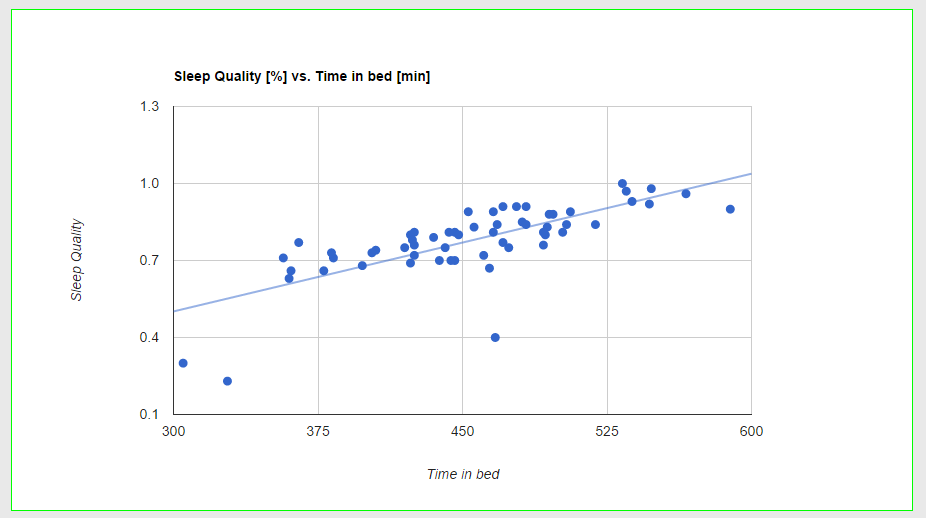

Ascend at UCLA is the newest student chapter of Ascend, a nationwide professional association focused on enabling individuals to realize the leadership potential of pan-Asians across global corporations. As Vice President of Information Technology, I developed their first website and maintained it to make sure all information was up to date.
Data Driven Infographics

As a part of a Design and Media Arts data visualization class, I created dynamic, data-driven inforgraphs intended to understand. The first project I developed involved extracting thumbnail images from the movie "Taxi Driver" and analyzing the levels of color and tone throughout the movie.
The next project I created involved an analysis of my sleep cycles. I had recorded my sleep patterns over the course of three months during Spring 2013 using an iOS application and used the Google Charts API to show how sleep quality correlates to the length of time spent in bed.
We planned and developed an Android applicaiton that allows players to play songs on an on-screen touch piano. Two players can also connect through bluetooth to compete and see who can achieve the highest score. The main game was built in the Unity engine.
Team Members:
Julian Lin, William Nguyen, Rudy Bi, Earl Escueta
Digital Design Calculator
A simple 16-bit programmable calculator I made as a part of a digital design class. The calculator is capable of storing/recalling numbers and performing various arithmetic operations.
MoonRunner, is a WebGL based game where the objective is to dodge moon rocks for as long as possible and collect items to increase your chances of survival.
Team Members:
Nathan Tung, Mark Iskandar, Earl Escueta
Mixxx
Mixxx is an open source computer program for DJing music. Our project involved making an Intel/UCLA themed interface that would be more friendly for touch tablets and implementing a functionality for 2-in-1 laptop/tablets that would automatically switch the interface when the user switched modes for their device. We also added a feature that allows users to select which interface they would like to use when the applciation swtiches into tablet mode.